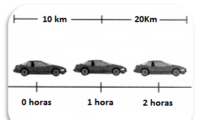

Movimiento Rectilíneo Uniforme (MRU)
El movimiento rectilíneo uniforme (MRU) describe el desplazamiento de un objeto en una sola
dirección con una velocidad constante en una determinada distancia.
En física, el MRU puede ser observado dentro de un plano, en un eje de coordenadas, donde el
movimiento es en línea recta desplazándose hacia una dirección. Es uniforme porque las variables
de velocidad y tiempo en la recta son constantes.
Las fórmulas del MRU contemplan tres incógnitas: Velocidad constante (V), Distancia (d) y Tiempo (t).
Cálculo de Velocidad
La velocidad en MRU es constante y se obtiene dividiendo la distancia recorrida (d) entre el tiempo (t) que se emplea
en recorrerla.
La fórmula es: 𝑣 = 𝑑/𝑡
Resultado:
Cálculo de Distancia
La distancia recorrida se calcula multiplicando la velocidad constante (v) por el tiempo (t) que dura el movimiento.
La fórmula es: 𝑑 = 𝑣*𝑡
Resultado:
Cálculo de Tiempo
El tiempo que toma recorrer una distancia a velocidad constante se obtiene dividiendo la distancia (d) entre la
velocidad (v).
La fórmula es: 𝑡 = 𝑑/𝑣
Resultado:
